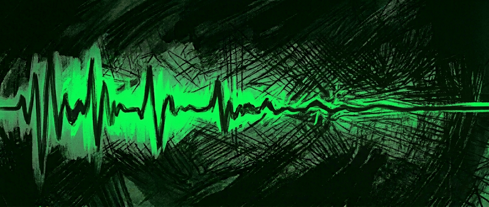

You don't need more You just need to hear yourself.
Uncontrollable stream of thoughts, overthinking, or anxiety
Constant searching, wandering in a fog of information
Swinging between burnout and apathy — waking up exhausted from a day that hasn't even started
Constantly doing something yet never actually moving forward
Irritability that has nothing to do with the person in front of you
Lack of energy to do anything.. even to want
Reset KlinikaLithuania
Maybe you've already tried to fix it
Read books
Visited a therapist
Tried apps
Watched videos online
Something else
Reset KlinikaLithuania
And how much did it help?
Mark where it feels most accurate.
not at alla lot
—
|
It doesn't have to be this way.
Let me explain.
Reset KlinikaLithuania
Here's what's really happening.
You live in a system that wasn't designed for clarity.
It was built for speed, stimulation, and extracting reactions.
Your phone pings 80 times a day. News is engineered to trigger anger and fear. Every app is optimized for one goal — keeping your attention in a constant state of quiet tension.
By the end of the day, your brain processes more information than your great-grandparents did in a month.
This isn't a conspiracy. Nobody planned it (probably).
But ultimately — what's the difference, because it still pushes you in exactly the opposite direction from the one thing that can actually help.
Reset KlinikaLithuania
Your own voice.
Buried in noise.
Not in some mystical sense.
Not "find yourself" the way it's written in a yoga or meditation brochure.

Your voice — what's truly inside you. Your real desires. Or perhaps the inner conflicts that keep spinning that wheel of thoughts.
Reset KlinikaLithuania
Imagine you're doing an exercise. Everything seems normal...
But gradually your shoulder starts to hurt, maybe your back. You don't understand what's wrong — you keep going because it seems fine.
And only when you see yourself in a mirror do you realize — elbow too high, back bent, the load is in the wrong place.
And there's nothing unusual about that.
It doesn't mean there's something wrong with you.
You're simply seeing yourself and your situation from only one angle.
Reset KlinikaLithuania
You can't find a solution on your own not because something's wrong with you.
But because you can't see your blind spots while being inside them.
When you're inside a pattern, you can't see it. It just feels like "that's how things are."
Thoughts that keep spinning in circles don't feel like thoughts. They feel like reality.
A decision you keep postponing doesn't feel like avoidance. It feels like normal, ordinary behavior.
You need someone beside you.
Not to tell you what to do.
To reflect back what you can't see.
Reset KlinikaLithuania
Lukas K., M.D.
Medical Doctor
Lithuania – Switzerland
I was a practicing physician when I hit a wall that the system couldn't explain.
Work experience in psychiatry in Switzerland
Cognitive behavioral therapy courses in Munich
637+ personal sessions conducted
That wall forced me to search beyond conventional medicine — meditation retreats, breathwork, hypnosis, NLP, even psychedelics — searching for what the standard model was missing...
10 years of results.
What crystallized wasn't another "secret" answer.
And not some method that imposes someone else's solution on you. Not a pill with side effects written in fine print.
A structure designed to move against the current.
Not outward — toward more information, more stimulation, more noise.
Inward. Back toward your voice, which has been there all along — "buried," but not damaged.
Built on what actually works: neuroscience, clinical psychology, Western medicine — and supplemented with what most miss — from NLP and Zen to dopamine detox.
With one goal: to quiet the noise, external and internal, so that your own voice becomes audible again.
Not by imposing answers, but by creating conditions where you can finally find your own.
What this isn't.
Therapy that goes in circles without clear direction.
Eighteen months of examining your childhood.
Talking about sad things week after week.
Starts where you are. Moves toward clarity. Doesn't go in circles.
What people actually experience.
This isn't something you'll understand just from a description. But here's what people say after going through the process:
A decision they circled around for months or years becomes obvious.
"For almost a year I was going in circles about a career decision. Pros and cons lists, conversations with friends, insomnia at 3am, the same scenarios playing in my head over and over. In the session it became clear that the decision itself was never the problem, I was just avoiding what it meant about me. When that 'came to light,' the answer became very clear too. Embarrassingly obvious, honestly."
Tomas, 34 · Vilnius
Anxiety that had no name — traced back to something concrete.
"For three years I lived with this quiet background anxiety that I couldn't explain to anyone. Not even panic attacks, nothing dramatic, just a constant hum that made everything harder than it should be. Through the process, I managed to trace it to a specific cause. It didn't disappear overnight, but for the first time I knew exactly what I was dealing with."
Ieva, 21 · Kaunas
A behavior pattern they kept repeating — made clear, tangible, changeable.
"The same thing kept happening. Different job, different relationship, but everything about the same issue. I thought that's just who I was. Turned out it wasn't character, but a specific behavior and thinking pattern. Now I catch it mid-sentence."
Marius, 42 · Klaipeda
An emotional weight they carried — released.
"I didn't even realize how heavy it was until it was gone. I had just gotten used to it — that tightness, the fatigue, the feeling that something was wrong. Only when I finally let myself feel 'normal' did I understand what weight I'd been carrying."
Greta, 31 · Siauliai
It all starts with
one conversation.
Diagnostic Session
60 min · 1 : 1
Content and what's covered
▶
Where you really are in your current stage
▶
What's most important to you right now
▶
What next step makes the most sense for you
After the conversation, you'll leave with more clarity, lightness, and a sense of inner peace about your next steps.
Some decide to continue on their own. Others choose to keep working together, wanting to move faster.
Therapy is usually an open-ended process — weekly sessions for months or years, without clear direction or an endpoint. This is different. It's a structured diagnostic conversation with a specific goal: to identify what's really happening beneath the surface and give you a clear, tangible understanding that you can move forward with.
How does the session work in practice?+
First, after booking, you'll receive a structured diagnostic questionnaire via email. It will help you formulate what's going on and make the session itself more productive. Then you'll join a video call using the link at your scheduled time.
What happens after the session?+
Beyond this first session, there's a structured 8-12 week process designed for deeper change. But not everyone needs it. The first session provides clarity on its own — many people leave having gotten what they needed. If you feel like continuing — we'll discuss it.
Why does the session cost €57?+
The price is deliberately set at or below the market average for a standard therapy session, because the biggest obstacle to real change is usually taking that first step.
Do I need to travel somewhere?+
No - the first session takes place remotely via video call. You'll receive the link and all the information after booking.
Is everything confidential?+
Without exception. Everything discussed in the session stays within it. No recordings, no shared notes, no third parties.